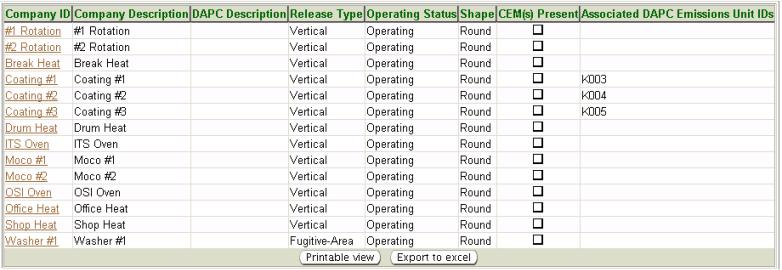

The system’s third-level menu, Egress Points,
of the Facility
Profile
page allows you to view a list of all release points located at a
facility. This page also allows you to access a specific Release Point
Information page, through a hyperlink for each release
point, where you
can edit information pertaining to that release point. For more
information on editing Release
Point Information, refer to the Facility
Tree Help page.
The following topics are contained in this help page:
The following datagrid of information will appear
when you access the third-level menu, Release Points:

Company
ID - The term the facility uses to identify the release
point. Clicking on the Company ID hyperlink will take you to the specific Release Point Information page for that release point.
Company
Description – The term the facility uses to describe the
release point.
AQD
Description - The description that is assigned by
Ohio EPA and will be included in permits and on documentation within
the system.
Release
Type - Identifies the type of release from the release
point as
it exists with Ohio EPA; Fugitive-Area,
Fugitive-Volume, Horizontal,
Vertical, or Vertical Obstructed.
Operating
Status – Identifies the operating status of the release
point as it exists with Ohio EPA; Operating
or Not
Operating.
Shape
- Identifies the shape of a stack release point as it exists with Ohio
EPA
when the Release
Type is Horizontal,
Vertical, or Vertical Obstructed.
Shapes include Other,
Rectangle, Round, or Square.
CEM(s)
Present – Identifies, via a check box, if a continuous
emissions monitor (CEM) is present for a stack release point when the
Release
Type is Horizontal,
Vertical, or Vertical Obstructed.
Associated AQD Emissions Unit IDs - Identifies which emissions unit IDs at the facility are associated with the release point.
Information from the Release Points
list may be viewed, exported to
Excel or printed. By clicking you may view and print. By
clicking
a
pop-up will appear in which you must click Open in
order to view the
information in Excel.